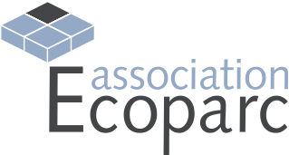

Cette nouvelle approche d'ateliers permet d‘évaluer, de structurer et d‘optimiser la performance en développement durable de votre entreprise ou administration. Les ateliers combinent une approche pratique avec une formation ciblée. Les référentiels utilisés (avec le logiciel de management online OKPilot) constituent des véritables outils d’évaluation et de pilotage et vous permettent d‘établir une « feuille de route » pour mettre en œuvre une bonne gestion ou pour améliorer votre gestion d’entreprise dans divers domaines du développement durable.
Approche innovante
Une approche originale, à caractère pratique et participatif, basée sur :
• les cours dispensés par des spécialistes en management durable;
• les ateliers sur des éléments concrets
• le travail des participants dans leur entreprise, avec un suivi online;
• des check-lists de soutien (check-lists thématiques ou par branche).
Ateliers proposés (5 X 1/2 journée + 1 journée réparties entre avril et novembre):
En ce moment nous ne proposons malheureusement pas de module de formation en français sur ce thème. Nous vous prions de vous référez à nos modules en allemand.
Ces formations sont recommandées par les associations suivantes :
|
|
|
|
 |

Leurs membres ont droit à un rabais de CHF 300.- sur la finance d'inscription.